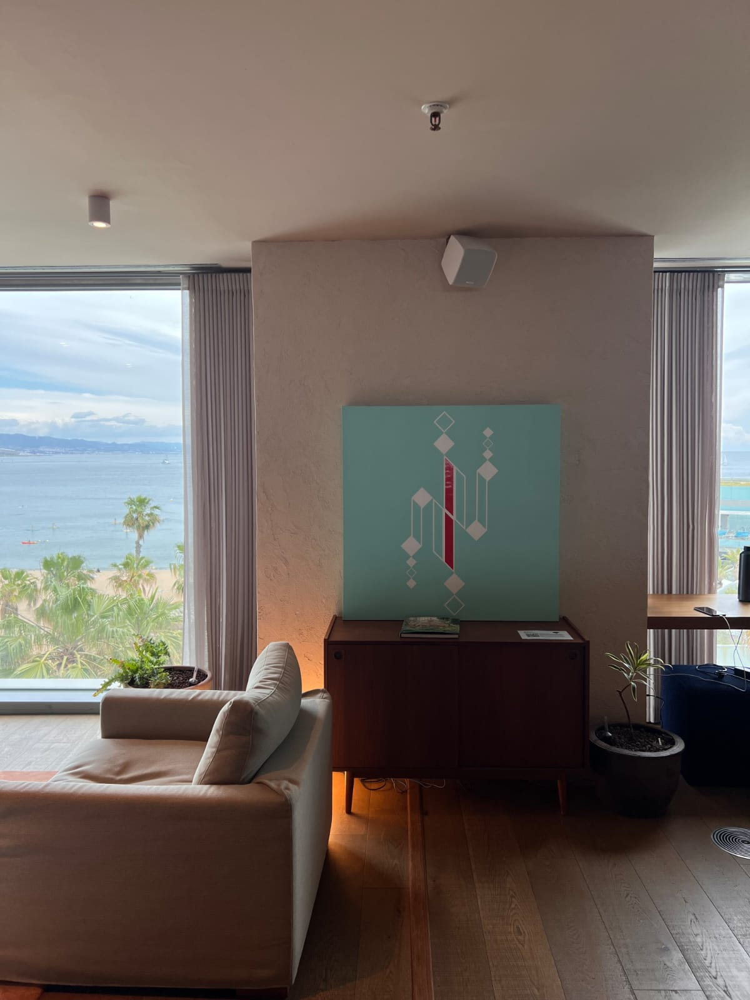

Sounding Canvas at Norrsken | Perceptrum² Live Event (June 4)

On June 4, 2026, Perceptrum² will present Sounding Canvas at Norrsken as a live demonstration of Augmented Painting systems and relational objects. The event explores how touch, sound, and computational interpretation converge into post-immersive artistic environments.
Interactive Opening Moment
We will begin with a relational exercise: participants will engage in structured interaction with one another, exploring what remains of communication when content is reduced and only relational structure persists.
This opens a shared question: intelligence is not located in any single agent, but distributed across interaction systems. In this framing, AI is not treated as a tool, but as an interlocutor within a co-constructed field of perception and response.
Act I - The Tactical Atrophy of the Digital Age
We begin from a broader condition: the progressive “tactical atrophy” of the human body within screen-based environments. Contemporary digital interfaces are designed primarily for consumption rather than relation, reinforcing a persistent Screen-Barrier between body and world.
From this perspective, our work is not technological demonstration, but a response to a sensory and relational deficit. We do not position ourselves as technology artists, but as practitioners engaged in the restoration of embodied presence.
Act II - The Ontology of Augmented Painting
We introduce Augmented Painting as a “Third State” between traditional pictorial practice and computational systems. It is not a device, but an ontological shift: a redefinition of what a painting becomes when it operates as a Relational Object.
Through works such as Sounding Canvas and Sounding Stage, we explore how invisible computational layers can remain materially absent while behaviorally active. Our aim is not technological display, but perceptual transparency: removing friction between body, surface, and response.
We speak here as a unified artistic entity. Our dual authorship is not separation, but a single cognitive and aesthetic system.
Act III - Living in a Resonant World
We then project forward: how Augmented Painting can extend beyond artistic contexts into architecture, education, and social environments. We are interested in relational systems where spaces respond rather than function, and where interaction becomes co-construction rather than command execution.
From this, we develop the idea of networked resonance: environments in which presence is distributed, and meaning emerges through interaction rather than transmission. Our work is positioned as an initial articulation of this transition.
Closing Perspective
We return to a simple principle: in an age dominated by hyper-visuality, the most radical gesture is not to look, but to touch. Augmented Painting becomes a framework for re-inhabiting physical space through relational systems, where human and machine co-produce meaning in real time.